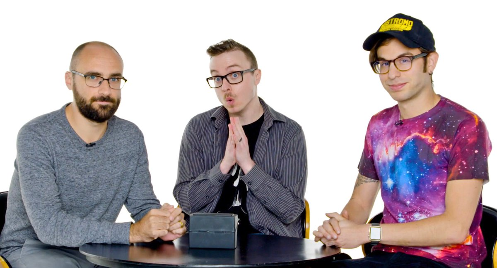
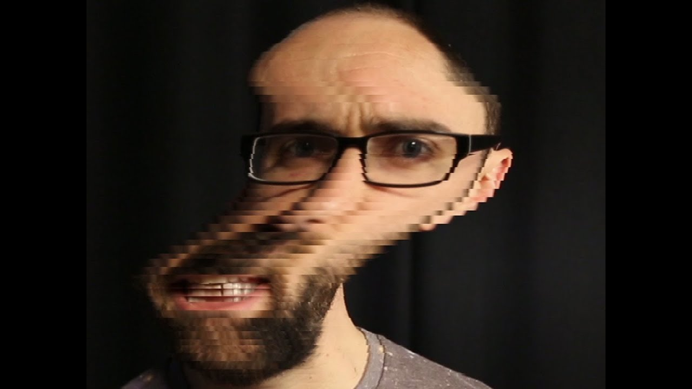
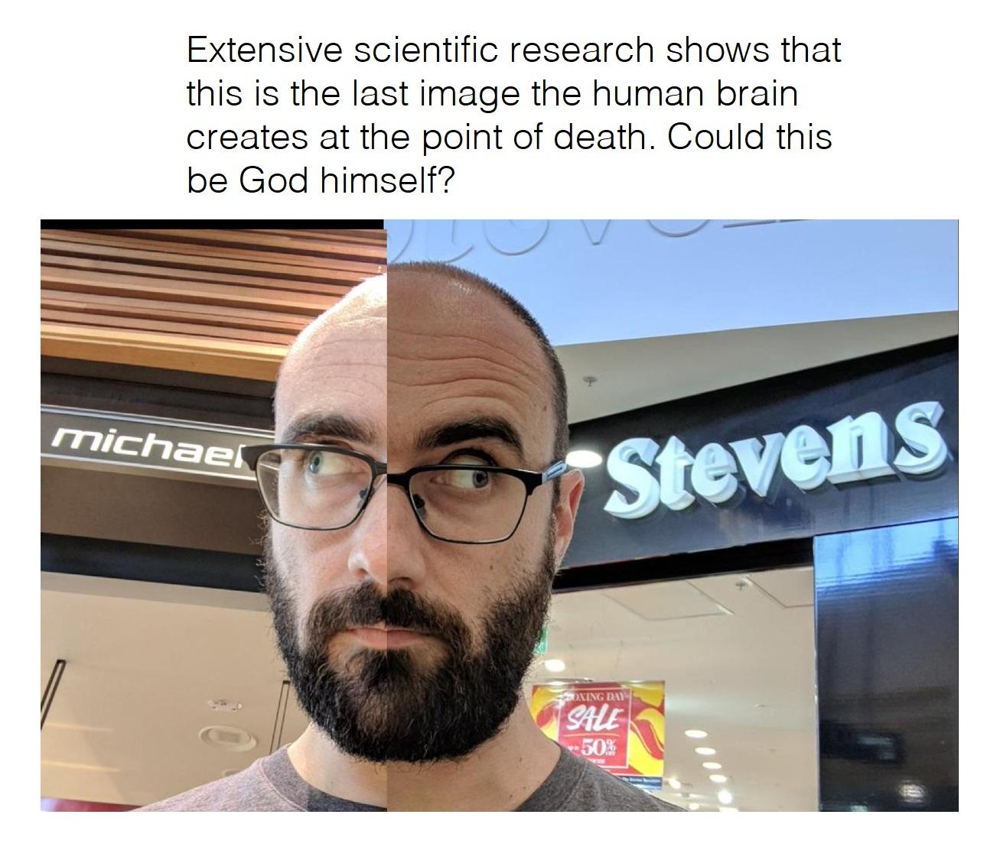
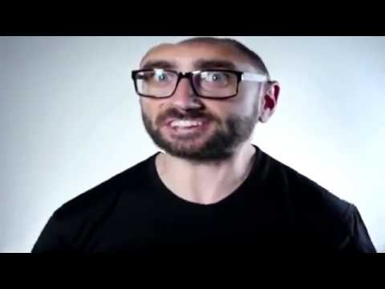
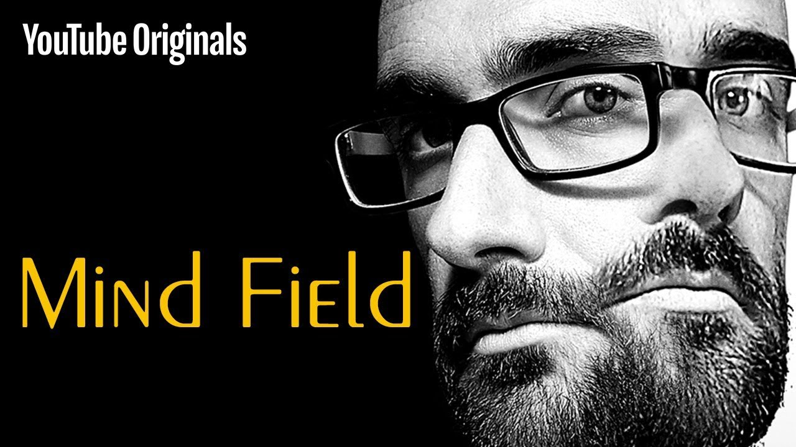

What is Vsauce?

Vsauce is an educational youtube channel started by Michael Stevens on June 24, 2010. Vsauce has now expanded into an entire team and consists of three channels Vsauce 1, 2, and 3. Interestingly the name "Vsauce" originally came from a random name generator Michael was playing with.
Who is Vsauce
Vsauce consists of three hosts, Michael Stevens the founder, Kevin Lieber, and Jake Roper as well as a whole team working behind the scenes. The three of them run the channels Vsauce, Vsauce 2, and Vsauce 3 respectively. All three hosts have a slightly different style in their videos but they all produce entertaining educational videos targeted at all age groups.
Michael Stevens

Michael Stevens, the original host of Vsauce, is a very eccentric man who became very popular for his funny faces and unique style in his videos. Many screenshots and parodies of the ways he acts have been spread on the internet and a few are included below and above
  Mind Field
Mind Field was a youtube original show based on the style of Vsauce and hosted by Michael Stevens. Originally there was massive backlash against Michael for making paid educational content but all episodes of mind field have since been made free with ads.